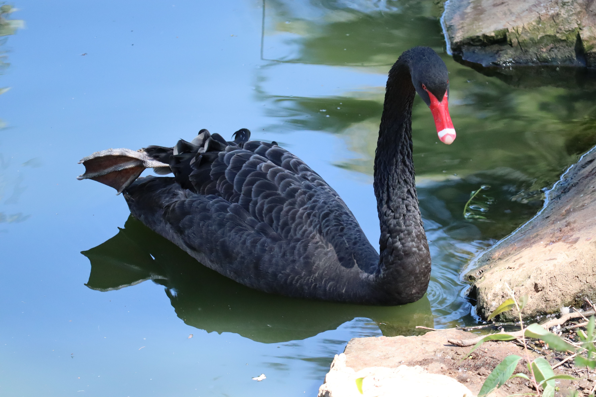

The Black Swan is a large Australian waterbird with predominantly black plumage, a long elegant neck and contrasting white flight feathers that become particularly obvious in flight. Its deep red bill has a pale band near the tip. Black Swans inhabit wetlands, lakes, rivers, estuaries and coastal lagoons and feed mainly on aquatic vegetation. They are strong swimmers and can gather in large flocks where suitable wetlands provide abundant food. Unlike many large waterbirds, they are comfortable in both freshwater and saltwater environments.